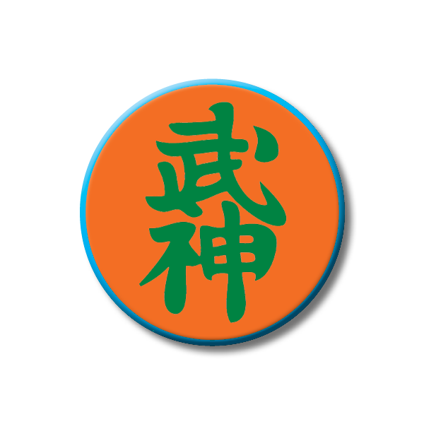

"School of the Nine Demon Gods"
Dr. Hatsumi is the 28th Soke
Overview:
This school is known in the Bujinkan for its battlefield arts. This school is part of the famous Kukishin Line, one of Japan's oldest and revered samurai clans. This art is known for its fast and powerful ken (sword) and bo (6ft. stick) techniques. The dakentaijutsu of this art uses techniques assuming the combatants are wearing armor, and the movements reflect this by off-balancing the opponent when striking and defending.
This system was used as a naval art, and consequently the movements are designed to also be used on a ship that is slippery and rocking. Besides ken (sword) and bo (6ft. stick) many other weapons of the Bujinkan are used in this art including kodachi (short sword), jutte (metal rod), shuriken (throwing blades), hanbo (3ft. stick), jo (4.5ft. stick), yari (spear), naginata and bisento (halberds). This school was formed by Izumo Kanja Yoshiteru presumably around the 1100s.
Soke of Takagi Yoshin Ryû:
